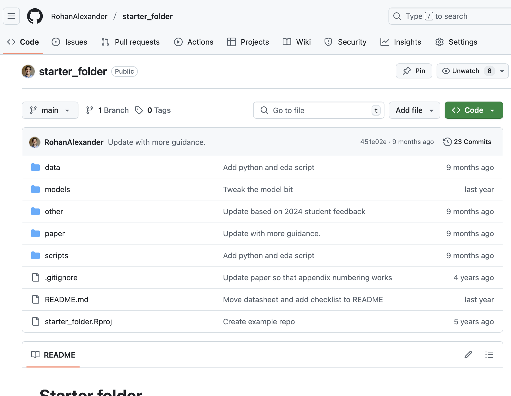

#### Setup ####
library(tidyverse)
set.seed(853)
#### Simulate dataset ####
vocab <- c("the", "in", "to", "of", "that", "and", "had", "a", "was", "policy", "members", "on", "for", "be", "global", "rate", "inflation", "growth", "been", "at", "it", "by", "cash", "forecast", "than", "expected", "would", "this", "were", "more", "target", "meeting", "as", "monetary", "tariffs", "some", "also", "noted", "there", "developments", "domestic", "uncertainty", "australian", "reduction", "markets", "but", "could", "which", "economy", "their", "market", "they", "little", "lower", "trade", "range", "these", "an", "us", "time", "outlook", "not", "basis", "around", "or", "prices", "with", "might", "scenarios", "financial", "international", "impact", "higher", "still", "remained", "from", "baseline", "current", "have", "other", "consumption", "household", "labour", "per", "cent", "previous", "early", "expectations", "over", "including", "likely", "since", "demand", "data", "activity", "risks", "case", "conditions", "levels", "response", "australia")
analysis_dataset <-
tibble(date = seq.Date(
from = as.Date("2025-06-01"),
to = as.Date("2010-06-01"),
by = "-1 month"
)) |>
mutate(date = date + (3 - lubridate::wday(date)) %% 7) |>
arrange(desc(date)) |>
mutate(minutes = map_chr(seq_len(n()), ~ str_c(
sample(vocab, 1000, replace = TRUE), collapse = " "
)))
#### Save data ####
write_csv(analysis_dataset, "simulated_dataset.csv")Text as data
1st session
Rohan Alexander
2025-06-25
Getting started
Background
- Thank you Francesco and the Centre for AI, Trust and Governance! 🙏
- Assistant professor, University of Toronto (Faculty of Information and the Department of Statistical Sciences).
- Research focus is on developing workflows that improve the trustworthiness of data science, especially focused on the role of code and testing.
- PhD in economic history from the ANU.
Today’s plan
- 4x 30 min sessions:
- Each with one part conceptual and one part coding.
- 10 min break between each.
- Code and slides: https://github.com/RohanAlexander/nlp_intro
- Email: rohan.alexander@utoronto.ca
- Website: https://rohanalexander.com
Conceptual
Introduction
- Stories are a powerful tool for communicating and they persist through history.
- Stories are also useful when we deal with data.
- It turns data into meaningful narratives, enabling decision-making.
- Publishing papers is basically trying to tell stories.
Workflow
The workflow for telling stories with data includes five essential steps:
- Plan
- Simulate
- Acquire
- Explore
- Share

Defining a research question
- Two approaches:
- Data-driven
- Theory-driven
- (Secret third) Methods-driven
Consider:
- Counterfactuals and bias
- Characteristics of good questions
- Refinement process
Why quantitative approaches?
- Both qualitative and quantitative approaches have their place.
- Quantitative analysis:
- Data quality
- Measurement
- Relevance
- In exchange we (hopefully) get reproducibility, uncertainty measures, repeatability, and the ability to scale.
The workflow
Plan
Planning involves:
- Setting clear objectives
- Understanding the audience
- Defining key messages
The workflow
Simulate
Simulating involves:
- Writing code to implement your planned dataset.
- Thinking carefully about types and names.
The workflow
Acquiring and preparing data
- Data collection
- Data preparation
- Challenges
The workflow
Acquiring and preparing data (cont.)
Being overwhelmed
Perhaps all the dragons in our lives are princesses who are only waiting to see us act, just once, with beauty and courage. Perhaps everything that frightens us is, in its deepest essence, something helpless that wants our love.
Rilke
The workflow
Explore and understand
- Descriptive statistics
- Visual exploration
- Statistical models
The workflow
Share
Effective communication involves communicating:
- the decisions that we made,
- why we made them,
- our findings, and
- the weaknesses of our approach.
Coding
Plan
- Initial research question:
- What factors influence the monetary policy decision by the Reserve Bank of Australia?
- Data:
- Monetary policy minutes from RBA website
https://www.rba.gov.au/monetary-policy/rba-board-minutes/
- Monetary policy minutes from RBA website
Plan (cont.)
Analysis dataset

Plan (cont.)
Analysis figure

Project set-up
https://github.com/rohanalexander/starter_folder
Simulating data
Simulating data (cont.)
# A tibble: 181 × 2
date minutes
<date> <chr>
1 2025-06-03 was around including demand inflation australia were per labour t…
2 2025-05-06 tariffs noted they for this levels be rate had would basis was bu…
3 2025-04-01 international for they over data australia growth household meeti…
4 2025-03-04 growth meeting the response economy this to growth trade trade ex…
5 2025-02-04 tariffs little international inflation developments for prices wa…
6 2025-01-07 forecast not more data meeting expectations on labour expectation…
7 2024-12-03 of this early members global might that were basis target economy…
8 2024-11-05 risks activity inflation basis on members cash it but levels trad…
9 2024-10-01 demand growth response household trade remained as us could consu…
10 2024-09-03 activity were had the been markets noted growth other their have …
# ℹ 171 more rowsConcluding remarks
- Our world is messy, and so are our data.
- You need to become comfortable with the fact that the process will be difficult.
- You need to learn to stick with it.
- Planning, and being as specific as possible, can help guide the process.
- There is hardly anything that we know for certain, and there is no perfect analysis. Instead our papers are about telling a story.